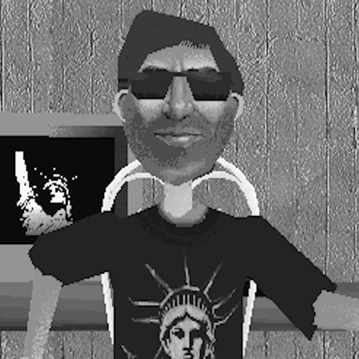

The CEO of Jameson & Clark and Associates, Donald Jameson Whittman.
Back in the year 2000, a 20 year old man by the name of Donald Jameson Whittman with a co-founder named John Clark Terrance founded Jameson & Clark and Associates to be within the times. At first, they had nothing but failures, but one day in 2008, they made ClearCalm. ClearCalm is a web-hosting service that costed very little for anyone to host a website on. Due to this being an affordable alternative to most expensive web-hosting services, their invention became viral very quickly. Combining with a free website making service called DevilFrost (created by one Alexander Johnston), both companies generated millions, which in turn made them very successful. These days, Both Mr. Whittman and Mr. Terrance have continued to work within the internet to make more inventions that revolutionize the web and tech as a whole. Furthermore, they have made computers, smartphones, and have their cornered share in the AI market which has made them even more successful. Recently, Jameson & Clark and Associates have aquired 3dmm.us from an amateur coder under the username of "Lt. Films" for $500,000. This acquisition was made due to the fact that the company has shown an interest in working within Microsoft 3d Movie Maker, the CEO citing his home movies he used to make as a teenager as an inspiration to buy the site.

Lt. Films, former owner of 3dmm.us.
Lt. Films was an amateur html coder, a 3dmmer, and a general jack of trades but mastered nothing. He originally started 3dmm.us as an attempt to revive a website he made on ProtoVillage back in 2023. He despised AI and he kept updating this site semi-regularly as way to spend some of his free time. Alas, whenever we here at Jameson & Clark and Associates gave him the offer to take the site he accepted it without hesitancy.